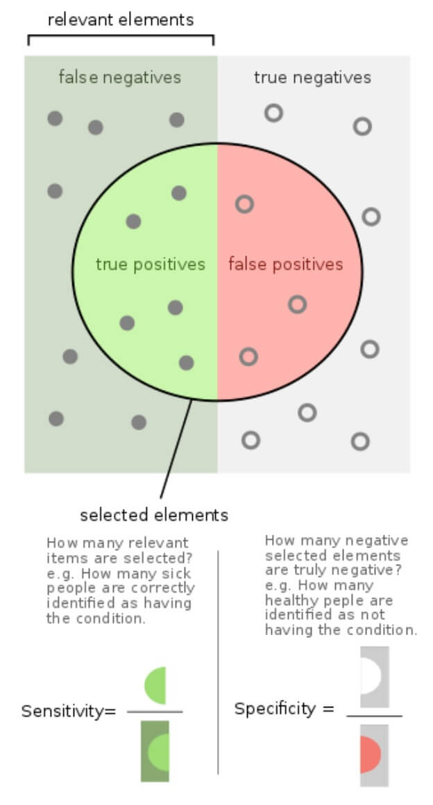
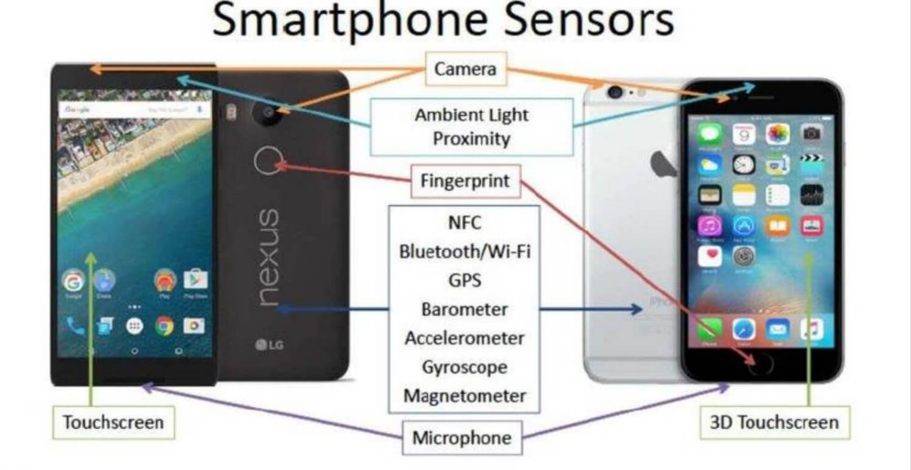

Dear readers, We are incredibly proud to finally release the first issue of
the youth science journal! We also hope you enjoy reading it.
We greatly appreciate that you take the time to read through
the articles and share your feedback with us.For our team of incredible writers, it has been inarguably a
remarkable experience to research these scientific topics and
write about them in the articles. Writing this issue has
allowed us to delve deeper into our favorite fields of study
and deepen our knowledge about it. We let ourselves research
topics that we love in various fields of science in the
beginning and gradually chose to write about certain topics we
wanted to delve into more. During the process of writing, we
faced a lot of setbacks in the sense that the sources we were
using were too complicated or incomprehensive to us, high
school students. However, by the end, we were extremely
satisfied with the result and how it turned out. To deliver
this product, we utilized a relatively simple yet professional
rubric for the articles that let us keep the articles easily
comprehensible for high school students but, at the same time,
scientific and formal. In addition, the subjects of each
article were initially pre-determined, but we found that
method limited us significantly as it didn’t let us to fully
explore our favorite fields of study. Therefore, we kept the
subjects of each article up to the writers. We also found that
when we wrote about our favorite field of study allowed us to
output a higher caliber of work.This issue goes from various subjects from neuroscience to
computer science and psychology. Highlights include an
in-depth review of a neurological condition, how could AI be
used in future pandemics, and history of IQ tests. Even though
we are highly proud of this issue, we still hope to improve
the next issues significantly by partnering with undergraduate
students and doctorates to peer-review our articles and make
sure that all our articles are scientifically correct. We’d
also like to review other deeper topics in the fields of
science.If you have any questions or would like to contact us, please
do from our official website
https://www.ys-journal.com/contact
or email us at
ysciencejournal@gmail.com!
Best Regards,
Gasser Mamdouh (Chairman)
Moemen Wael (Vice-Chairman)
Saif Taher (Vice-Chairman)
Life with No Pain: Congenital Insensitivity to Pain
Gasser M. Alwasify
AbstractPain is mostly associated with unpleasant feelings and is
largely despised and feared due to the emotional distress of
sensations. However, without pain, humans wouldn’t be able
to separate harmful actions from non-harmful ones and
wouldn’t let their bodies heal. The sensation of pain is
very crucial to the human body as it acts as a defense
mechanism by alerting the body of on-going damage to the
tissue or potential damage. The importance of pain is even
more obvious when diagnosing patients with congenital
insensitivity to pain, as their life is filled with terror
of being hurt but being unable to detect it, which could
ultimately lead to their death. This article dives into this
disorder and how it can affect the normal daily lives of
human beings, further revealing the vital importance of
pain.
Background
According to the International Association for the Study
of Pain, “Pain is an unpleasant sensory and emotional
experience associated with actual or potential tissue
damage, or described in terms of such damage." It is very
vital that scientists started considering it as ‘the sixth
sense’
[1]. Pain serves a critical survival purpose: it protects
our body from risky or damaging situations by prompting it
to withdraw and escape these situations. For instance, if
a person touches a hot object, a potentially endangering
situation, they would displace their hand immediately as
an attempt to reduce the damage caused by it. Furthermore,
pain helps protect that part of the body after the
incident. It informs the brain that this part of the body
is damaged and requires time to recover. Therefore, the
sensation of pain would alert that person to avoid
utilizing it for a while, thus speeding up healing. The
final function of pain is pretty straightforward: it helps
humans learn to prevent similar damaging situations in the
future
[1] .When people understand that this sensation is just a neat
way for the human body to indicate dangers, it can help to
remove some of the worries that often accompany the pain.
However, humans should never ignore pain. Unlike an alarm
that can be turned off, pain should not be overlooked as
it can lead to hazardous consequences such as permanent
tissue damage and potentially permanent loss of
function.Before trying to comprehend the mechanism of pain, it is
essential to understand the difference between pain and
nociception. Pain is the state of agony usually followed
by an injury; however, nociception is the subconscious
detection of actual or likely tissue damage. Although they
might seem very closely related at first, they can occur
independently from each other. For example, some people
with severe tissue damage might report having no pain or
vice versa. Those are believed to be experiencing
nociception, but no actual distresses of pain
[2].
Mechanism
Pain occurs when special fibers called nociceptors
respond to stimuli that can potentially cause tissue
damage. Nociceptors are different from the usual neurons
as they have a cell-like body with a peripheral axon and
an ending that responds to diverse stimuli and is
additionally the transmitter of the pain-related
information to the central nervous system as shown in
figure 1
[3]. Various discrete nociceptors respond to different
stimuli like thermal, mechanical, and polymodal
nociceptors. Thermal nociceptors mostly respond to heat or
cold stimuli and notify the body about it, while the
mechanical nociceptors are activated by sharp pinpricktype
stimuli. Polymodal nociceptors are responsible for
responding to any stimuli that are already causing tissue
damage, leading to a slow-burning type of pain
[5]. These nociceptors are the same receptors that also
respond to chemicals released in chilly or spicy food like
hot pepper, which induces a burning sensation
[6] .C-fibers, characterized by unmyelinated axons, are the
most abundant subclass of nociceptors, conducting slowly
and responding to noxious thermal, mechanical, or chemical
stimulation arising from neural crest cells. After the
C-fibers, the second most abundant subclass of nociceptors
is the thinly myelinated nociceptors that are
characterized by their fast conduction and are more likely
to convey more sudden pain
[3].
When tissue damage occurs, it triggers the release of
different chemicals at the site of damage, causing
inflammation. Some of these chemicals are Prostaglandins,
which enhance the sensitivity of receptors to tissue
damage, making humans feel pain more intensely. When those
receptors are activated, they transmit an impulse to the
brain. The signals travel up the spinal cord and reach the
brain, which then processes the information and assesses
how dangerous it is. Modern brain imaging has indicated
that there is no specific area in the brain that processes
pain. Instead, it is a complex array of reactions that
take place in several parts of the brain which correspond
with emotions, thought processes, etc.
[6] .In this process, experience plays an essential role as it
indicates if the stimulus was dangerous in the past or
not. If the brain thinks that the event is dangerous or
potentially damaging, it will evoke the sensation of pain
and send impulses out to the peripheral cells that might
compel that person to pull away or yell out in distress.
Since pain is such a significant signal to the human
being, it does not get subjected to the same kinds of
filtering that occurs with the other senses. For instance,
most senses will adapt to a stimulus that exists for a
long time, and it starts to ignore it more and more over
time, but in the case of pain, it is never neglected by
the nervous system.
Life with No Pain?
Figure 1: Schematic drawing of a nociceptor showing the
four regions of the cell
[4]Children and even young adults have always wished to have
superpowers like not feeling pain ever and similar
abilities. This is a very common thought for people as
they think that feeling no pain would relieve them from
the emotional distress that follows it. Nonetheless, this
‘super-ability’ is not fictional. This rare
‘super-ability’ has occurred in almost 20 cases, all over
the world
[7]. However, this isn’t something that people should wish
for, as the inability to feel pain is extremely fatal and
should never be considered as a ‘superpower’ but rather an
exceedingly dangerous disorder.
Congenital Insensitivity to Pain (CIP), is a hereditary
disorder where a person is not able to perceive any
physical pain from birth. However, they can still feel
touch and differentiate between sharp and dull objects,
and hot and cold. On the other hand, they can’t sense if a
hot object is burning their body. As described before, one
of the most essential functions of pain is teaching the
human brain that doing this action again might injure the
body. Hence, patients with CIP cannot comprehend if
certain actions are dangerous or not, it leads to the
accumulation of wounds and broken bones due to a lack of
awareness of the danger and not expressing any discomfort.
This ultimately decreases these patients’ life expectancy.
Most people born with this condition die during their
childhood as they often do not realize their fatal
injuries, such as broken bones until it is too late
[1].Recent research indicated that the prime cause behind
this disorder is a gene mutation in different genes such
as the PRDM12 gene, SCN9A, or the NTRK1 gene. Mutations
more frequently occur in the NTRK1, the neurotrophic
tyrosine receptor kinase 1 gene on chromosome 1, which is
the receptor gene responsible for the nerve growth factor.
In consequence, failure of differentiation and migration
of neural crest cells occurs which induces the complete
disappearance of small myelinated and unmyelinated nerve
fibers causing the loss of pain sensation
[8].
According to a study performed on a 1-year old with CIP,
the most common symptoms accompanied by the insensitivity
to pain are frequent episodes of fever, mental
retardation, and self-mutilating behavior. This specific
child had the gene mutation in the PRDM12 gene, causing
frequent tongue and perioral lesions, loss of teeth, and a
habit of self-mutilation
[8]. Moreover, self-mutilation such as frequent biting of
the tongue, fingers, wrists, and feet is considered to be
the most dangerous side-effect as it causes severe
bleeding. This was evidently shown in a case documented of
a 9-month-old boy, who suffered the aforementioned issue
as he was reported with 3 months of prior self-mutilation.
These further advances the idea that the dire effects of
CIP only begin with the fruition of teeth in children as
it permits them to hurt themselves through biting without
awareness, resulting in scarring and deformation
[9].
Unfortunately, there is no definite treatment for this
disorder up until now due to the still largely unknown
mechanism of pain perception and how such a disorder could
cause the dysfunction of pain. However, alternative
measures can be taken to help prevent self-mutilation and
damage such as a new proposed mouthguard-like appliance
that can prevent the biting. This appliance was applied
extensively in a 16-month-old girl patient.Through several trials using different materials, the
research found that the usage of methyl methacrylate for
the mouthguard-like appliance proved to be successful as
the 16-month-old girl accepted it and allowed her lesions
to heal. It allowed her to enjoy a rather lesion-free life
until she learned how to remove the appliance which gave
rise to severe lesions and teeth loss. At that point,
nothing could protect her from herself except her
understanding of the situation and learning that removal
of the appliance could injure her fatally
[10]. One of the proposed solutions was full mouth
extraction: the process of removing all the teeth in one’s
mouth. The procedure was not agreed upon by the parents
due to the psychological and functional implications.
These cases are nothing more than proof to demonstrate
that congenital insensitivity to pain isn’t a blissful
condition, but rather more of a curse to those who have
it. A patient named Betz said, “People assume that feeling
no pain is this incredible thing and it almost makes you
superhuman. For people with CIP, it’s the exact opposite.
We would love to know what pain means and what it feels
like to be in pain. Without it, your life is full of
challenges”
[11]
References
Is intelligence inherited: A brief history of IQ test and what
makes us smart
Mohamed A. Salem
AbstractIntelligence and how it is perceived was always a matter of
debate throughout history. Several hypotheses gave the genes
the lion’s share of one’s intelligence while others
accounted for the high intelligence of someone to its
education, environment, and even his mother’s womb. On the
other hand, other opinions see that someone’s intelligence
isn’t even measurable and that IQ tests are absurd and
mostly biased, with the presence of threshold that is
uncrossable to them regarding testing one’s ability and
skill. However, research has shown all the previous points
of view can be right and wrong at the same time.
Case #1
In 1995-1997, Robert Plomin, an American psychologist,
and geneticist gathered a group of children to perform an
experiment. He gathered a group of gifted students chosen
from all over America, ages 12 to 14, who excel in their
grades, in the top 1 percentile in their respective
classes, and have an IQ of about 160. The children were
brought together every summer in Iowa to perform the
experiments. Plomin and his team believed that those
children are the closest they have to a genius and that
they must have the best version of each gene that may have
an effect and influence one’s intelligence. They took a
blood sample from each of the children to begin their hunt
using little of DNA from human chromosome 6; the reason
for choosing human chromosome 6 is based on previous
research of Plomin’s. Later on, in the experiment, Plomin
and his team found on the long arm of chromosome 6, a
sequence that was different from other people. This led
them to conclude that, if there is a gene for
intelligence, it is present in the human chromosome 6
[1].
The First IQ Test
Alfred Binet, a French psychologist, was asked by the
French government in the early twentieth century, to help
them decide which students will encounter difficulties in
their education; as the French government back then, began
making tuition mandatory. Binet, and a colleague of his,
Théodore Simon, began the development of a set of problems
that may serve the purpose of determining someone’s limits
regarding academic prowess as instructed by the French
government. Later on, they developed what is known as the
Binet-Simon Scale, which is the base of every IQ test now,
the first IQ test
[2] .The test was used then by H.H Goddard on Americans and
immigrants, which was considered absurd, as the test was
very subjective and biased towards the middle and upper
class. But that wasn’t the end of it, the test caused
unnecessary discrimination between immigrants upon
intelligence
[3]. The test was also by Robert Yerkes, as he applied it on
millions of world war 1 recruits
[4]. Despite the results of those tests being ignored, it
later affected the use of IQ tests. Later Robert Stemberg,
an American psychologist and psychometrician, suggested
that there are three types of intelligence: analytical,
creative, and practical
[5] . This proclamation emphasized the ignorance of both
Yerkes and Goddard, and their false use of IQ tests.
Case #2: Beth and Amy
Twin sisters, Beth, and Amy were put for adoption, they
were separated by a Freudian psychologist to do an
experiment. The experiment's goal was to measure the
effect of the family and inside the house environment on
one’s intelligence and personality.Amy was adopted by an overweight, insecure, poor family
that struggled in society, and on top of that, with an
uncaring mother. Amy turned out to be neurotic and
introverted. Beth, on the other hand, was put in a rich,
relaxed, loving, and cheerful family, like the ones on TV.
It was expected that Beth will turn out as an extroverted,
easy-going, cheerful girl. However, the results were
nowhere near that; she turned up just like her sister
[5].
Case #2: intensified
In 1997, Thomas Bouchard, an American psychologist, and
geneticist researched pairs of separated twins from all
over the world; to compare their intelligence and
personality, just like with Beth and Amy.The highest correlation in his studies was between twins
reared together, twins that weren’t separated. They shared
the same genes, womb, and family. However, the most
surprising correlation was between adopted children from
different families who were reared together. They only
shared the family, and there was no correlation, this led
to the conclusion that family did not affect at all on
one’s intelligence and personality.
Conclusion
Francis Galton, an English Victorian era statistician,
wrote an analogy once that said “Many people have amused
themselves with throwing bits of sticks into a tiny brook
and watching their progress; how they are arrested, first
by one chance obstacle, then by another; and again, how
their onward course is facilitated by a combination of
circumstances. He might ascribe much importance to each of
these events, and think how largely the destiny of the
stick had been governed by a series of trifling accidents.
Nevertheless, all the sticks succeed in passing down the
current, and in the long run, they travel at nearly the
same rate” He was implying that if children were exposed
to better education in a great amount it affects their IQ
dramatically but only for a temporary period which was
somewhat true. You could excel in fifth grade and your
friend would fail, but that doesn’t mean it can’t be the
way around in ninth grade. And as in the experiment of
Beth and Amy, and in Bouchard’s experiment, the family was
somehow proved to have no effect at all. A lot of other
studies had the cause of uncovering which affects our
intelligence the most. It’s believed that half of your IQ
was inherited, one fifth formed upon your surrounding
environment, and the rest was formed in the womb and
others.
References
Usage of Artificial Intelligence in Future Pandemics
Saif Taher
AbstractIn
[1], researchers found that radiologists have relatively
mediocre sensitivity rates compared with specificity rates
when diagnosing COVID-19 cases via CT scans. AI has the
potential to make the diagnosis process more efficient,
effective, and economical. In
[3], a group of researches examines the possibility of using
deep learning to analyze CT scans, and
[5]
presents a brilliant cloud-deep-learning framework that
combines data gathered from embedded smartphone sensors to
give a COVID-19 diagnosis. However,
[4]
warns that the lack of training data will prevent any
practical application of these solutions during this
pandemic.
Background
Many people still regard AI merely as an element of
science-fiction, exclusively existing in the writers’
imagination. Unbeknownst to those people, AI has already
slipped under our noses into much of our daily lives. From
life-saving machines to more subtle gadgets, AI continues
to transform numerous industries, and healthcare
definitely won’t be an exception.The medical industry has seen some amazing innovations
recently fueled by the pandemic. These developments have
shed some light on AI’s great potential to aid with
detecting, preventing, responding to, and recovering from
future disease outbreaks.
The Problem
In epidemiologists’ talk, sensitivity refers to the
portion of positive cases who were correctly
identified as such, or the TPR (True-Positive-Rate).
On the other hand, specificity refers to the portion
of negative cases that were correctly identified as
such or the TNR. (True-Negative-Ratio). Both terms are
shown in figure #1.During a study conducted in
[1] , seven radiologists were asked to differentiate
between 219 COVID-19 pneumonia chest CT scans and 205
non-COVID-19 pneumonia scans. Overall, the group
displayed fairly good specificity rates, but on the
other hand, sensitivity rates were rather mediocre; in
some cases, there could be only minuscule differences
between COVID-19 pneumonia and some other types of
pneumonia, which occasionally leads medical experts to
erroneously rule out positive cases as negatives,
hence the lackluster sensitivity. Imperfect
sensitivity rates threaten to overwhelm healthcare
facilities, causing cross-infection, putting
vulnerable patients’ lives in danger, and inflicting
even more economic damage. Besides, CT testing can be
time-consuming, and COVID-19 test kits are at short
supply, which further hinders the diagnosis of
patients.Clearly, this is an urgent problem with far-reaching
consequences. However, it also happens to be a very
good opportunity for AI systems to prove their
worth.

Figure #1: An illustration of sensitivity vs.
specificity.
The Solution
Deep learning is a form of machine learning inspired by
the human brain, where artificial neural networks use
gigantic amounts of data to learn how to do a specific
task by repeating it countless times, slightly optimizing
itself every time until it masters that task
[2]. Deep-learning algorithms have become advanced to the
point where they could be used reliably to diagnose
COVID-19 patients, which is exactly what many researchers
have already done. A group of researchers developed a
ResNet-50 Convolutional Neural Network (CNN) model which
is able to distinguish COVID-19 pneumonia cases from other
pneumonia cases. The model, namely “COVNet”, has an
AUC-ROC rating of 0.96, which is outstanding for a binary
classification system. There have been several other
neural networks developed in addition to COVNet, with
AUC-ROC ratings as high as 0.99 and accuracies up to 98%
[3]. Moreover, it’s important to predict which patients are
likely to need Intensive Care Units (ICU)because their
capacity is limited to very high-priority patients.
Fortunately, researchers have developed a prognostic
prediction algorithm which is able to calculate the
mortality risk of COVID-19 patient. Other researchers have
developed an AI which is capable of predicting whether a
patient would develop Acute Respiratory Distress Syndrome
(ARDS) with 80% accuracy
[4].
These results clearly show that ML algorithms have become
immensely useful against disease outbreaks. However, X-ray
generators and CT scans won’t be available everywhere,
every time: Consider developing countries with poor
healthcare systems and hospitals, where there are often
“peak” times when said facilities are completely
overloaded with no capacity to receive more patients.
Those situations require novel approaches that enable
rapid and effective testing using whatever equipment is at
hand.Luckily, smartphones have a lot of embedded sensors, as
shown in figure #2, which can be exploited and turned into
a means of diagnosis. In
[5], a brilliant framework incorporating these sensors is
presented, which would allow for quick, cheap, and
effective testing. The framework works by aggregating
input from different sensors, and uploading that data to a
cloud deep learning model that analyzes it to predict what
symptoms the patient might have and the severity of each
of them; and based on the result of said analysis, the
model will yield the probability of the patient having
COVID-19. Each sensor collects information about a certain
behavior, according to the sensor’s functionality: The
temperature-fingerprint sensor is used to predict the
level of fever; the camera and the accelerometer are used
to detect fatigue, nausea, posture, and headache; and
finally, the microphone chipset is used to analyze audio
data and indicate the type of cough the patient has. This
mobile-based framework is considerably accurate, as data
is collected from many different sources, and is also far
cheaper and less time-consuming than CT scans and
X-rays.

Figure #2: A diagram showing where many of the modern
smartphone sensors are embedded.
[6]
Challenges & Conclusion
Although both of the frameworks discussed above are very
promising, they are currently undermined by many
challenges, the biggest of which is lack of data; Thus, AI
systems need billions upon billions of bytes for training,
and in this context, data must be acquired through
expanded testing and CT scans, most of which as of yet
have come from Chinese hospitals which implies the
possibility of selection bias
[5] . It would take years to collect enough volumes of
random, unbiased data for properly training AI, which
means we probably won’t be seeing AI-powered COVID-19;
instead, we’ll probably be seeing AI deployed in areas
with the most short-term potentials, such as social
control via surveillance (e.g, checking citizens’
temperature with IR cameras, using facial recognition to
check if they’re wearing masks, etc.). To conclude, maybe
AI won’t be a huge player this pandemic, but we have
surely learned invaluable lessons and gained crucial
insight as to how it may be used against future pandemics
and disease outbreak.
References
Solar Energy: In-depth review of solar cells
Mohammed A. Ali
AbstractThe Earth receives an incredible supply of solar energy.
The sun, an average star, is a fusion reactor that has been
burning over 4 billion years. It provides enough energy in
one minute to supply the world's energy needs for one year.
In a single day, it provides more energy than our current
population would consume in 27 years. In fact, "The amount
of solar radiation striking the earth over three days is
equivalent to the energy stored in all fossil energy
sources." Solar energy is a free, inexhaustible resource,
yet harnessing it is a relatively new idea. Considering that
the first practical solar cells were made less than 30 years
ago, we have come a long way. A solar cell, or photovoltaic
cell, is an electrical device that converts the energy of
light directly into electricity by the photovoltaic effect,
which is a physical and chemical phenomenon. It is a form of
photoelectric cell, defined as a device whose electrical
characteristics, such as current, voltage, or resistance,
vary when exposed to light. In this article, types of solar
cells will be studied and their various applications.
Amorphous silicon (a-Si) solar cells
Amorphous silicon (a-Si) is the non-crystalline form of
silicon. It is the most improved type of thin-film
technology that has been released in the last 15 years.
The manufacture of amorphous silicon photovoltaic cells is
based on plasma-enhanced chemical vapor deposition
(PECVD), which can be used to produce silicon thin film.
The substrate can be made of flexible and inexpensive
material. It can also be at low temperature that allows
the deposition on plastic as well.“In its simplest form, the cell structure has a single
sequence of p-i-n layers.” Single layers could suffer from
significant degradation in their power output. The
mechanism of the degradation is called Staeble Wroski
Effect that refers to the light-induced metastable changes
in the properties of the hydrogenated amorphous silicon.
As the defect in the density of hydrogenated amorphous
silicon increases with high exposure causing an increase
in recombination current and reducing the efficiency of
the conversion of sunlight into electricity. In addition,
to solve this problem, it is better to use multiple thin
layers instead of one in order to increase the electric
field strength across the material.One of the pioneers of developing solar cells using
amorphous silicon is Uni-Solar
[1].They use a triple layer system that is optimized to
capture light from the full solar spectrum. The thickness
of the solar cell is just 1 micron, or about 1/300th the
size of mono-crystalline silicon solar cell because
amorphous silicon features a high absorption capacity, the
i-layer usually features a thickness of 0.2–0.5 μm. Its
absorption frequency ranges between 1.1 and 1.7 eV, which
is different from that of the silicon wafer, which has an
absorption frequency of 1.1 eV. Unlike the crystal, the
structural homogeneity of amorphous material is
comparatively low.Electrons and holes are conducted inside the material;
therefore, within the case of long-distance conduction,
there could also be a high composite probability of
electricity. To avoid this phenomenon, the i-layer should
not be too thick or too thin, because the latter problem
can easily cause inadequate absorption. To overcome this
predicament, a multilayer structured stack is usually
utilized in the planning of amorphous silicon solar cells
to realize a balance between the optical absorption and
photoelectric efficiency. While crystalline silicon
achieves a yield of about 18 percent, amorphous solar
cells’ yield remains at around 7%
[2].The low-efficiency rate is partly due to the
Staebler-Wronski effect, which manifests itself in the
first hours when the panels are exposed to sunlight, and
results in a decrease in the energy yield of an amorphous
silicon panel from 10 percent to around 7 percent. The
principal advantage of amorphous silicon solar cells is
their lower manufacturing costs, which makes these cells
very cost-competitive
[1] .
Concentrated PV Cell (CVP and HCVP) following the sun
A Concentrating electrical phenomenon (CPV) system
converts light-weight energy into current within the same
approach that typical electrical phenomenon technology
well but uses a sophisticated optical system to focus an
outsized space of sunlight onto every cell for optimum
potency as shown in figure #1. Different CPV styles exist,
generally differentiated by the concentration issue, like
low-concentration (LCPV) and high concentration (HCPV).
Concentrator photovoltaics’ (CPV) could be an electrical
phenomenon technology that generates electricity from
daylight
[3].
Contrary to standard electrical phenomenon systems,
it uses lenses and mirrors to focus daylight, but
extremely economical, multi-junction (MJ) star cells
as shown in figure 1. Furthermore, CPV systems
typically use star trackers and sometimes a cooling
system to any increase their efficiency
[4] .
Figure 1: representation of the structure of
concentrated CPV.
Current analysis and development are rapidly rising their
fight within the utility-scale segment and in areas of
high solar insulation. CPV technology has been around
since the 70s. Recent technological advancements have
enabled CPV to succeed in viability with ancient fuel
plants, such as coal, gas, and oil, once put in regions of
the world with sunny and dry climates. Concentrating
photovoltaic systems work by changing sunlight into
electricity past upside solar modules think about constant
basic conception to come up with electricity
[4].
CPV systems have utilized optical elements that
concentrate important amounts of sunlight onto
“multi-junction” solar cells. Particularly High
concentrating electrical phenomenon (HCPV) systems have
the potential to become competitive within the close to
future. They possess the very best potency of all existing
PV technologies, and a smaller electrical phenomenon array
additionally reduces the balance of system prices.
Currently, CPV is not utilized in the PV roof high segment
and much less common than typical PV systems.Concentrating electrical phenomenon (CPV) modules add
abundant the same approach as past PV modules, except that
they use optics to concentrate the sunlight onto solar
cells that do not cover the whole module space. This
concentration issue – in Semprius’ case over one,100 times
– dramatically reduces the amount of semiconductor
required (<0.1 percent) and opens up the potential to
cost-effectively use high-performance multi-junction cells
efficiently levels greater than forty-one to figure
properly, however, CPV modules should accurately face the
sun.Therefore, the CPV modules area unit utilized in
conjunction with high-performance trackers that showing
intelligence and mechanically follow the sun throughout
the day. Aside from this, the CPV systems area unit
designed and operate very like ancient PV systems
[4].